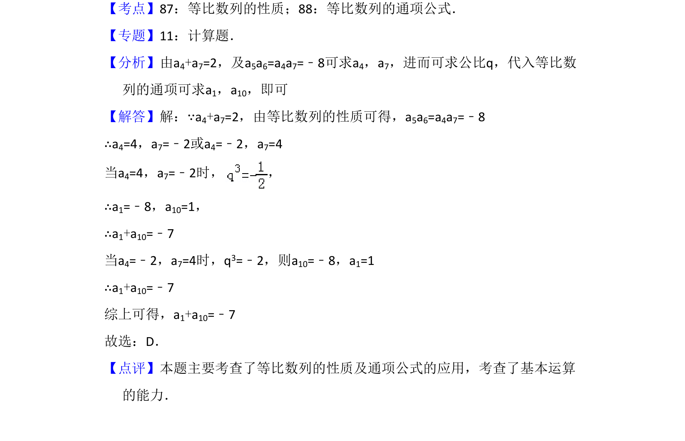

考点：等比数列性质 等比数列通项公式
该题考查等比数列的性质及通项公式的应用，通过已知条件求指定项的和。

📄 原 PDF 第 4 页：
素材/真题/吉林/2008-2024·（吉林）数学高考真题/2012年高考数学试卷（理）（新课标）（解析卷）.pdf
5．（5分）已知{an}为等比数列，a4+a7=2，a5a6=﹣8，则a1+a10=（ ） A．7 B．5 C．﹣5 D．﹣7
【考点】87：等比数列的性质；88：等比数列的通项公式．菁优网版权所有 【专题】11：计算题． 【分析】由a4+a7=2，及a5a6=a4a7=﹣8可求a4，a7，进而可求公比q，代入等比数 列的通项可求a1，a10，即可 【解答】解：∵a4+a7=2，由等比数列的性质可得，a5a6=a4a7=﹣8 ∴a4=4，a7=﹣2或a4=﹣2，a7=4 当a4=4，a7=﹣2时， ， ∴a1=﹣8，a10=1， ∴a1+a10=﹣7 当a4=﹣2，a7=4时，q3=﹣2，则a10=﹣8，a1=1 ∴a1+a10=﹣7 综上可得，a1+a10=﹣7 故选：D． 【点评】本题主要考查了等比数列的性质及通项公式的应用，考查了基本运算 的能力．